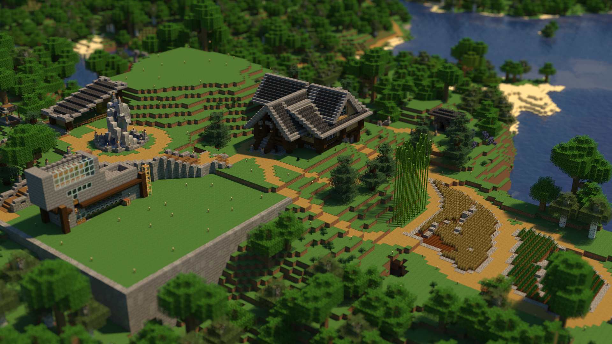
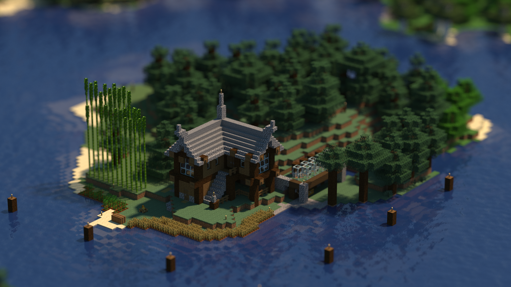
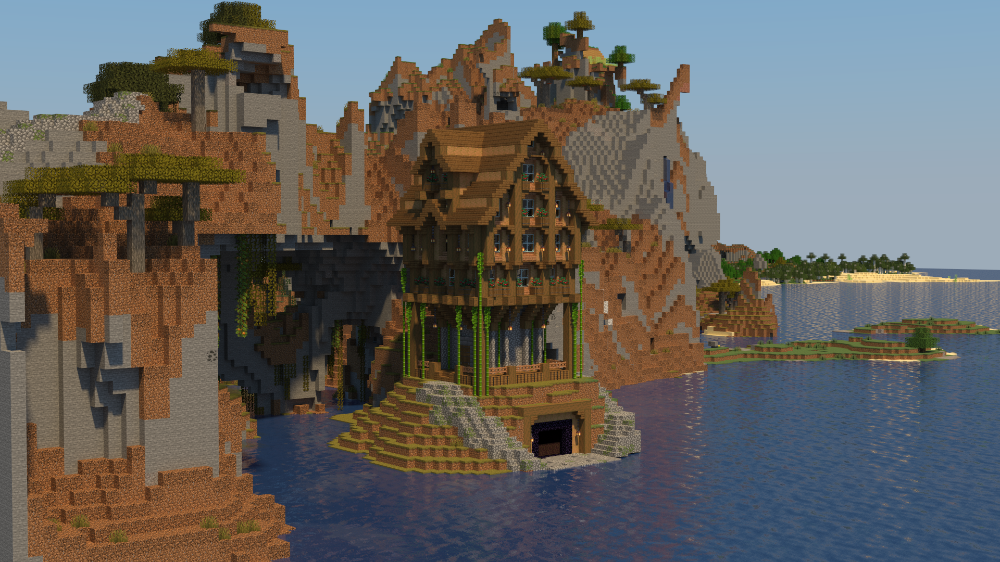
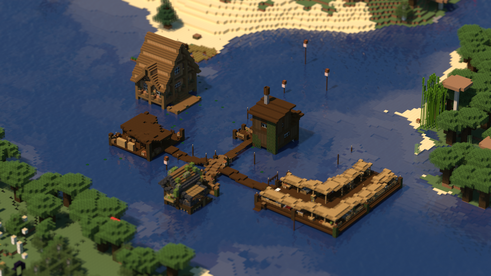
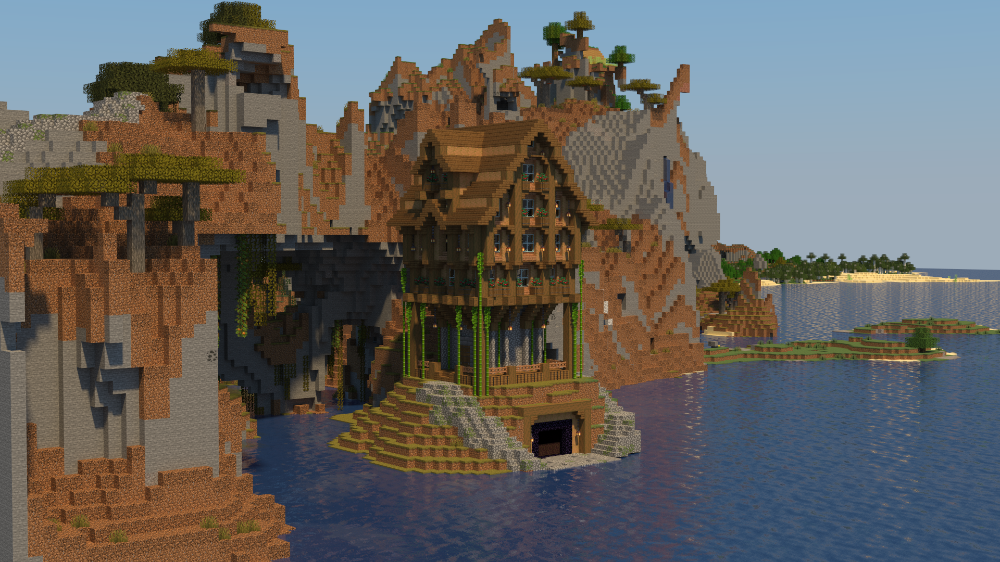
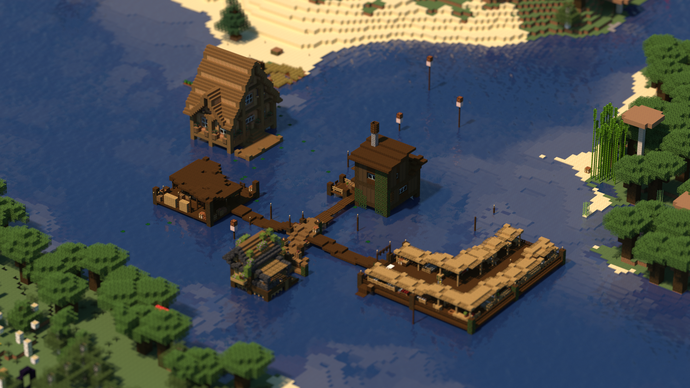
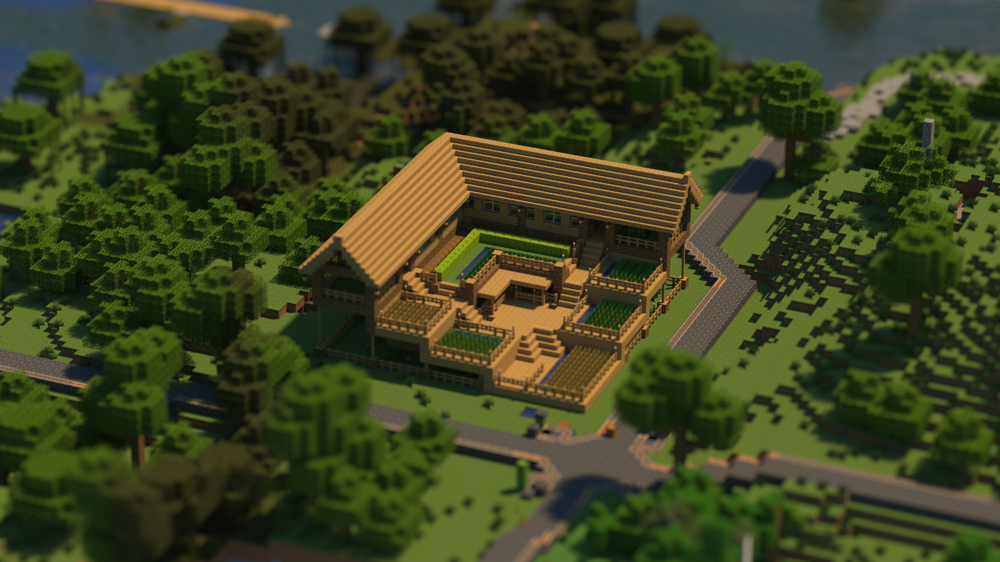
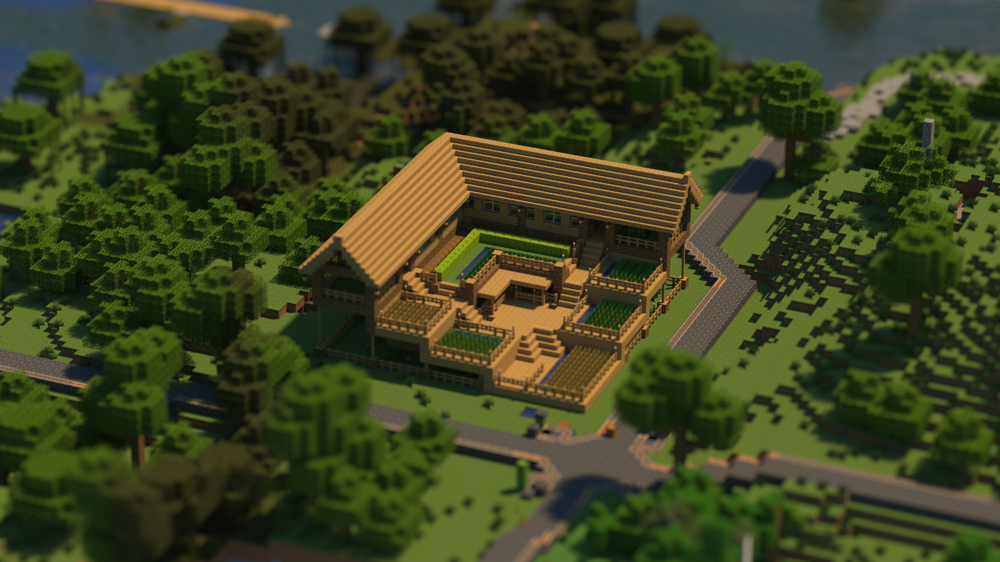

À propos de Brookstock
Le Server Minecraft Brookstock (BMS) a été conçu en 2018 alors que ses membres fondateurs vivaient ensemble pendant leurs études de premier cycle. C'est à partir d'un simple désir de jouer sur un serveur les uns avec les autres que BMS est né.
Le serveur tire son nom de la maison où il a été fondé, puis hébergé sur un petit ordinateur serveur au sous-sol. Depuis cette époque, le serveur a subi de nombreux changements d'infrastructure pour arriver là où il est aujourd'hui.
Avec la mise en œuvre des changements susmentionnés, le BMS cherche maintenant à se diversifier et à accueillir de nouveaux membres sur notre serveur. La demande d'adhésion peut être trouvée vers le bas de cette page. L'objectif principal de notre serveur est la construction et l'agriculture, et c'est ainsi que nous parvenons à garder l'intérêt pour le jeu après avoir fait presque tout le reste. Si vous aimez être créatif et montrer vos talents de constructeur, nous serions ravis de vous avoir sur le serveur !
Bien qu'il s'agisse d'un serveur que je gère entièrement seul, je pense avoir réussi à développer un système assez robuste pour assurer la sécurité des constructions de chacun et le bon fonctionnement du serveur. Le serveur est notamment équipé des éléments suivants :
- Système de classement de base pour l'attribution des autorisations
- Carte dynamique avec marqueurs configuarables (Dynmap)
- Plugin de chat pour une expérience de chat en jeu simplifiée (VentureChat)
- Un groupe sympathique de personnes qui aiment jouer à Minecraft ensemble
Si tout cela vous intéresse toujours, je vous invite à venir jouer avec nous sur notre serveur. Pour commencer, veuillez lire le règlement et remplir le formulaire d'inscription. Si vous avez des questions, n'hésitez pas à m'envoyer un message Discord : Forkentiney#6568.
Rules of Conduct
Dans cette section, je vais présenter quelques règles de conduite élémentaires que j'attends des joueurs qu'ils respectent. Étant donné que ce serveur est simplement destiné à être un lieu où les gens peuvent jouer ensemble, les règles n'existeront que dans la mesure où elles contribuent à maintenir ce type d'espace.
Les règles énumérées ici doivent être considérées comme un guide sur la manière dont il convient d'agir avant de prendre d'autres dispositions avec d'autres joueurs (par exemple, vous n'êtes pas autorisé à tuer d'autres joueurs, mais si deux joueurs acceptent de s'affronter, ce type d'activité serait autorisé).
Sans plus attendre, voici les règles simples de Brookstock Minecraft Server. Si vous avez des questions ou des préoccupations, n'hésitez pas à me contacter sur Discord.
- Be respectful: Essential to the quality of the server is that everyone should feel safe and welcome. Do not prank (outside of reason), kill, harass, or otherwise bully other players.
- Do not grief: This is fairly self explanatory, but players on the server should not have to worry that their builds might be destroyed or their things pillaged.
- Do not cheat: While on the server we would like everyone to be playing the same game. Please do not duplicate items, use x-ray, or any other cheat to give yourself an advantage.
- Do not steal from other players: Taking items from other people's chests without their permission will not be tolerated, no matter how insignificant the item may seem.
Relevant Links
New Player Guide
Welcome to the server! We're glad to have you, and we hope you enjoy what time you spend playing with us. In this section, there will be some information you should have in order to get the most out of what features are available on this server. To make things simple, the information will be sorted into categories that correspond with the various ranks that exist on the server. The information will start with the most basic rank and will finish with the highest. As you read down this list, remember that all permissions from one group are also applicable in the following group despite not being listed there. You can determine any player's rank by matching the color on this page to a player's color in the Discord server or else to the color in game.
- Default
- /seed
- /server
- /chlist
- Member
- /dmarker
- Moderator
- Admin
The Default rank on the server is the starting rank for all new members. As a consequence, there are not that many commands available to Default members. Default members are able to check the seed and see what other worlds are available to join on the Waterfall network. Additional permissions will need to be granted to players who wish to join other worlds.
The Member rank is the first rank of trust on the server and will only be given to members who have proved themselves to be trustworthy. Members will be able to add their own base marker on the Dynmap and use text formatting in chat. If you are in the Default group, you should not ask a Member to add a Dynmap marker for you. Instead, you should ask a Moderator.
Members of the Moderator rank will be able to find specific information regarding their role on the Discord. Moderators have the ability to verify reports of cheating, stealing, griefing, etc. while also being able to reverse the consequences of those actions. If you are having problems with another player, you should report this information to a Moderator in a private message on Discord.
The Admin of the server is Forkentiney. If you have any questions regarding anything, or would like to make a report about a Moderator or any other player, please do so via a private message on Discord.
Photo Gallery
  



 
